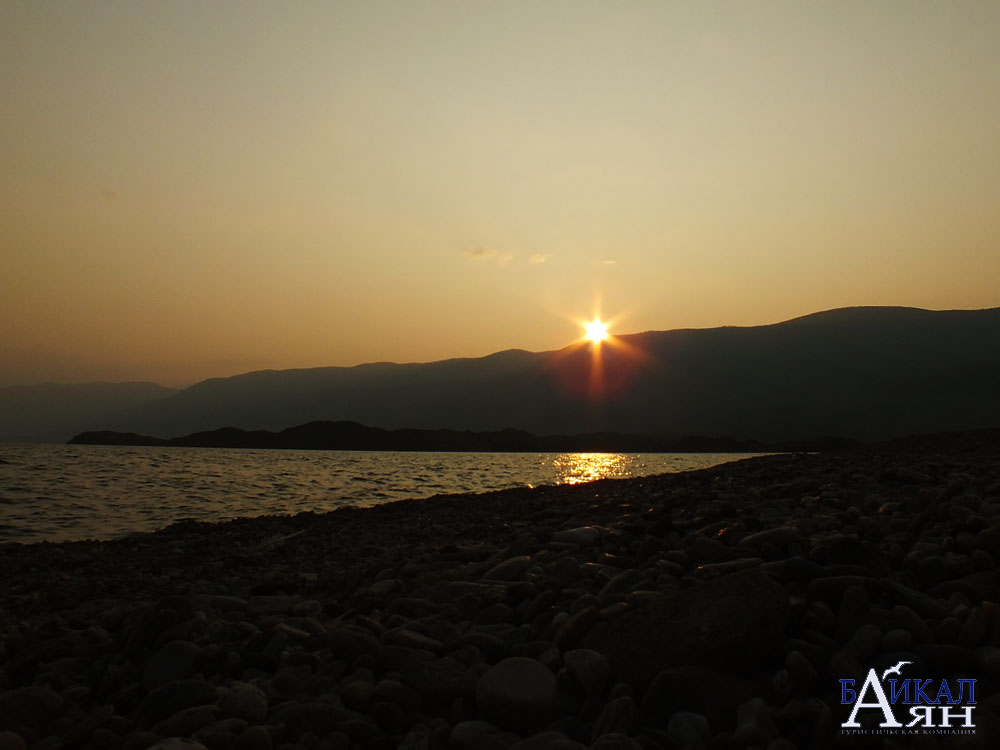

Самый крупный - мыс Мухор. По правую сторону находится пролив Ольхонские Ворота по левую - Залив Мухор, с хорошо прогревающейся водой во второй половине лета. На мысе со стороны залива очень много бухт, защищающих от сильных байкальских ветров, с уютными песчаными пляжами и небольшими соровыми озерцами. Поскольку это место очень привлекательно для отдыха, здесь очень много туристических баз.
Малое Море - является частью западной акватории Байкала - Большого Моря, отделеного островом Ольхон. Находится в
пределах границ Ольхонского района Иркутской области. Значительная часть западного побережья Байкала (включая частично
Малое море) и остров Ольхон входят в состав Прибайкальского национального парка.
Посмотреть достопримечательности Малого моря на карте.

Особенности пребывания на территории Прибайкальского национального парка
Прибайкальский национальный парк - особая природоохранная зона. Входит в состав Заповедного Прибайкалья. Основные владения парка - это рекреационная зона. Также в состав парка входит Заповедная зона на которой действует ряд ограничений: охота и рыбалка, сбор ягод грибов и дикорастущих растений и трав и многое другое.
Как проехать и особенности матршрута
Из Иркутска на автомобиле: К материковой части побережья Малого Моря. По Качугскому тракту до Баяндая, далее сворот на Еланцы и до автозаправочной станции не доезжая МРС (Сахюрта), далее сворот направо на грунтовую дорогу. Проехать по грунтовой дороге до развилки и повернуть налево (направо с. Шара-Тогот (Черноруд)). Здесь дорога пролегает по материковой части Малого Моря, протяженностью 85 км до деревни Зама.
Далее дорга уходит по юго-западному побережью Большого Моря вдоль всего Приморского хребта еще на 150 км за урочище Малое Кочериково до реки Хейрем. Это водораздел Приморского и Байкальского хребта.
К островной части побережья Малого Моря: Доехать до МРС (Сахюрта), далее через пролив Ольхонские ворота (летом паром, зимой - ледовая дорога) на остров Ольхон. Западный берег острова выходят в Малое Море.
Острова Малого Моря
Всего в Малом Море насчитывается 14 островов: Огой, Замогой, Ольтрек, Тойнак, Большой Тойнак, Малый Тойнак, Хунук, Борга-Даган, Хубын, Шара-Даган, Ижилхей, Модото, Харанцы, Едор.
Остров Огой
Остров Огой - это самый крупный остров Малого Моря. Его длина составляет 2,9 км, а максимальная ширина, находящаяся в центральной части острова, - 640 м. Площадь 0,7 кв. км. Если смотреть со спутника, то очертания острова напоминают парящую птицу.
Остров Огой считается чистым и обладающий сильной энергетикой. Главная достопримечательность Огоя - Ступа Просветления.
Остров Замогой
Расположен севернее Огоя в 7, 5 км. Имеет овальную форму размерами 1 км на 0,5 км. Это второй по величине остров Малого Моря, площадью 0,5 кв. км. Остров Замогой противопоставляют Огою. В местных легендах рассказывается, что когда-то на Замогой свозили больных проказой, которая приблизительно 100 лет назад свирепствовала на острове Ольхон. Буряты называли эту болезнь "муибишен" - худая болезнь. Многие, кто побывал на этом острове, говорят о негативной энергетике, выражающейся в появлении тревожности и ухудшении самочувствия.
Остров Ольтрек
Третий по величине остров Малого Моря, расположенный недалеко от мыса Курма. Его площадь 120 тыс. кв. м (0,012 кв км). Остров Ольтрек - остров чаек. В народе называют крокодил, за схожесть очертания. Говорят, что на этом острове когда-то очень давно хоронили шаманов, и свидетельство тому - каменные сооружения на могилах, выполненные в форме лодки с ориентацией с запада на восток.
Мысы Малого Моря
На Байкале очень большое количество мысов и примерно половина из них не имеет названия. Много мысов и на Малом Море. От МРС: 1. Онтхой, 2. Улирба, 3. Хадарта, 4. Уюга, 5. Цаган-Хушун, 6. Улан-Ханский, 7. Ядыртуй, 8. Ото-Хушун, 9. Хужир, 10. Хохе-Нахойтуй, 11. Зундук, 12. Зама, 13. Арал, 14. Калтыгей, 15. Кулгана, 16. Ядор, 17. Хардо, 18. Кочериковский.
Приморский хребет
Приморский хребет проходит вдоль юго-западного берега от реки Ангара, приблизительно до середины Байкала. Наивысшая точка - Трехголовый Голец, высотой 1 746 м, который находится на берегу Малого Моря приблизительно напротив поселка Хужир острова Ольхон.
Сарма: деревня, река, горное ущелье
Здесь дует самый свирепый ветер Байкала - Сарма, господствующий на всей акватории Малого Моря и прилегающих территорий. Река Сарма глубоко прорезает Приморский хребет формируя ущелье, откуда с Приленского Плато как в трубу врывается холодный арктический воздух. Скорость ветра может достигать 60 м/с. Признаком того, что ветер приближается, является кучевое облако над ущельем. Оно образуется достаточно быстро и приблизительно через 2-3 часа начинается ветер, который может дуть несколько дней подряд.
Курма: деревня, озеро, река, залив
Курма - небольшая деревушка Ольхонского района с численностью населения около 40 человек. Находится в 1 км от берега Байкала и в 2 км от мыса Уюга.
На побережье сформировалось соровое озеро Курма - площадью 0,3 кв км и длинной береговой линией около1,8 км и глубиной не больше 1 м. Образованно рекой Курмой. Это озеро мелководное, оно хорошо прогревается летом. В нем водятся щуки.
Курминский залив - один из самых теплых заливов на Байкале. Площадь залива - 1,8 кв км, длина береговой линии 3,5 км. Ограничен мысами Уюга и мысом Цаган-Хушун.